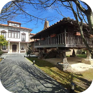

Cudillero · Asturias · AROME, IFS e ICON-EU · temperatura, lluvia, viento y nubosidad, hasta 7 días
Estado de cada llamada a Open-Meteo. Si algo no cuadra, copia este diagnóstico y envíalo. En «Celdas» se ve la celda de cada modelo para cada lugar y la altura del punto según Open-Meteo.
Pide a Open-Meteo las 9 celdas (3×3) que rodean a la que usa el panel en el lugar elegido (la central), con su altura media y la lluvia prevista en 48 h. Una celda de mar sale con 0 m. Sirve para valorar si alguna vecina representa mejor el sitio. Solo se consulta al pulsar el botón (una petición por modelo).
Datos: Météo-France (AROME), ECMWF (IFS) y DWD (ICON-EU), servidos por Open-Meteo.com con licencia CC BY 4.0. Previsión orientativa. El viento es el del modelo a 10 m y en la costa expuesta suele ser mayor en las rachas. Para avisos oficiales (lluvia, viento, costeros) consulta la AEMET. Página personal y no oficial.